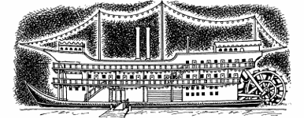
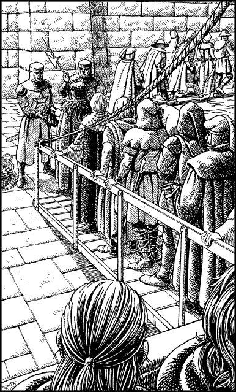

46
It is early morning when you awaken. Your sleep has revived your strength (restore 3 ENDURANCE points) and left you feeling in good spirits. You wake Karvas and then you both go up on deck to enjoy the warm sunshine and watch the passing countryside. To the west, the left bank is backed by farmsteads and orchards; to the east, the ground gently rises to low, rolling, vine-clad hills. The Sero is deep, and its fast-flowing current helps propel the boat downstream at a quicker rate than could be maintained by a horse. On reflection, you are glad that you decided to travel to Seroa by this route.
{kind=link}

The riverboat is crowded with passengers bound for the capital. From snatches of conversations that you overhear on deck, you learn that most of them are going there to see the crowning of Sadanzo. Many of your fellow travellers stand to gain in some way from his ascendance, and when you discover this fact, you and Karvas take care to avoid them as much as possible.
As darkness falls, the passengers congregate on a lower deck of the boat which serves as a gambling hall. You and Karvas remain at the rail and enjoy the sight of a waxing moon that dominates the clear night sky. ‘Tomorrow will be Harvestmas Day and the moon will be at its fullest,’ says Karvas, wistfully.
‘Yes,’ you reply, ‘and you, my lord, shall by then be rightful king of this realm.’
You leave the rail and retire to sleep, waking early the following morning with mixed feelings of excitement and apprehension. The riverboat comes within sight of Seroa by mid-morning and docks at the city’s wharf one hour before noon. You and Karvas are jostled by the other passengers as you wait on deck, for everyone is eager to disembark and hurry to Palace Square in time to see the crowning ceremony. When your turn comes to leave the riverboat, you see that the passengers ahead of you are being stopped at the end of the gangplank by two Seroan City Guardsmen. They are collecting their riverboat tickets.

If you possess a Riverboat Ticket, turn to 153.
If you do not possess this Special Item, turn to 27.